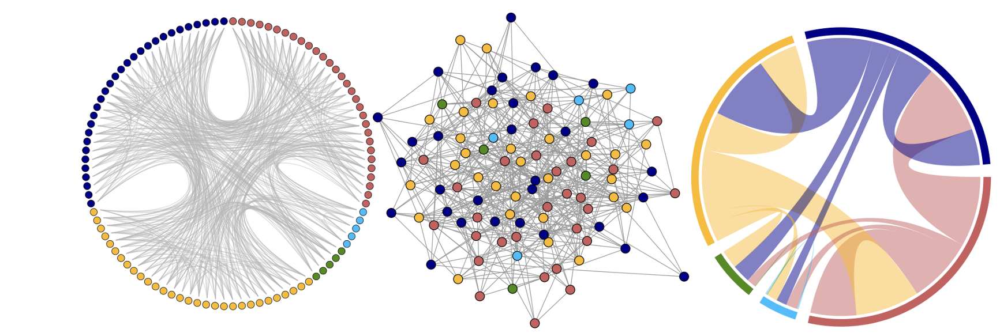

Using big data to study tiny organisms: Microbial ecology in the omics era

Hi, I'm Sam! I'm currently a Ph.D. candidate at the University of Southern California working under the guidance of Dr. David Caron.
I am a microbial ecologist interested in leveraging modern molecular and statistical tools to study microbial community composition and function in aquatic ecosystems. The "big data" era of science we are currently in excites me and I am always trying to learn new ways to analyze large, biological datasets.